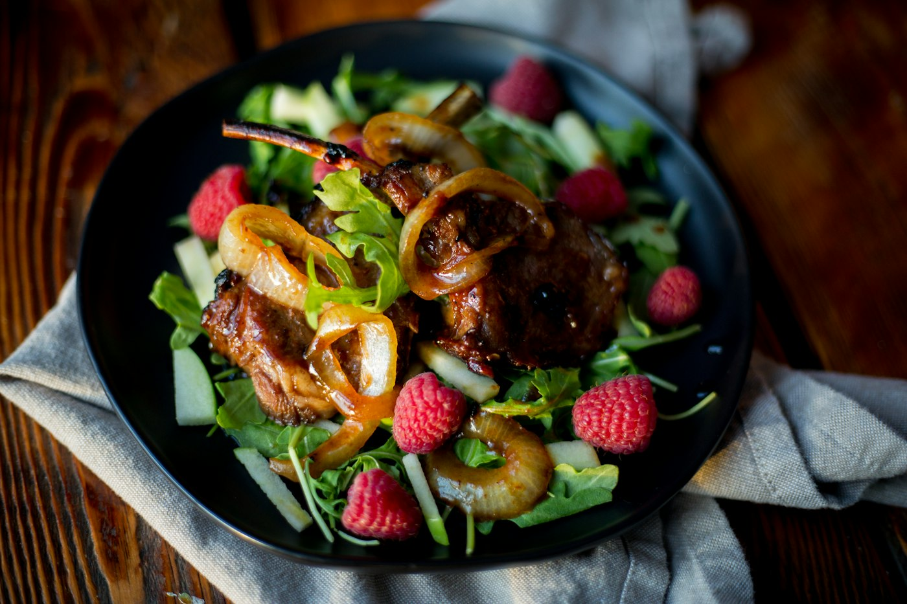
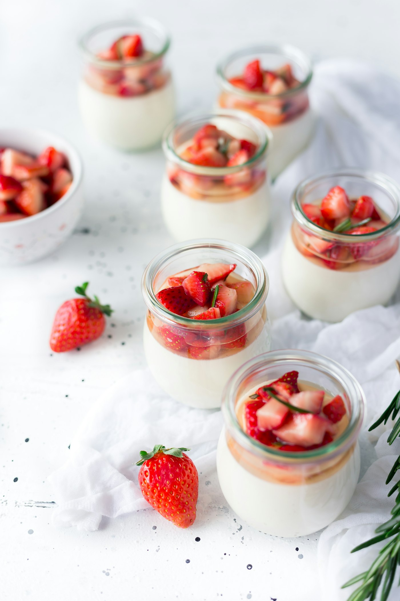
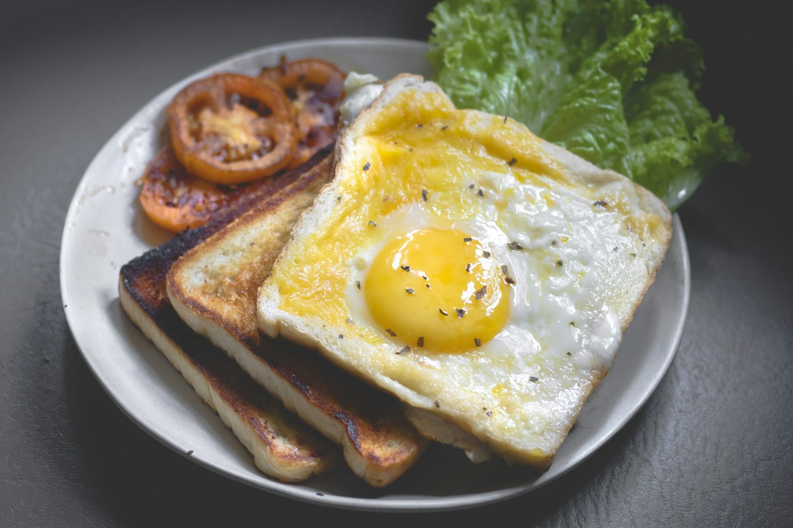
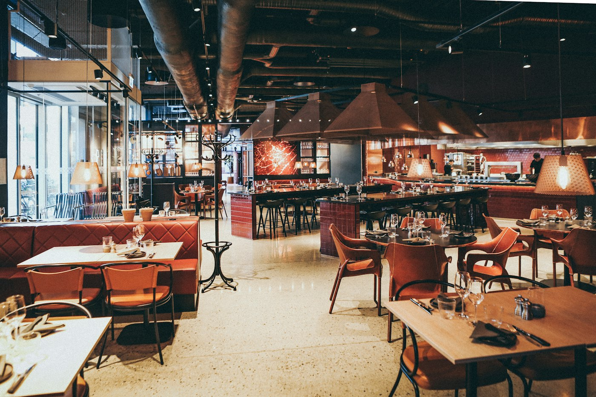

RESTAURANT SILVORA
Gusturi locale,
într-un cadru cald.
Rețete familiare, o perspectivă nouă și timp pentru a le savura.

LA PARTER · 80 DE LOCURI
Bucuria de a sta la masă.
Lemnul, lumina caldă și atmosfera montană fac loc conversațiilor. În farfurie, preparatele românești reinterpretate păstrează aproape gustul ingredientelor și al meselor împreună.
Mic dejun08:00–10:30
Prânz și cină12:00–22:00





DE DIMINEAȚĂ PÂNĂ SEARA
Rămâi pentru încă o poveste.
De la prima masă a zilei până la o cină tihnită, restaurantul este locul în care ziua capătă savoare.
UN ALT RITM. ACEEAȘI STARE DE BINE.